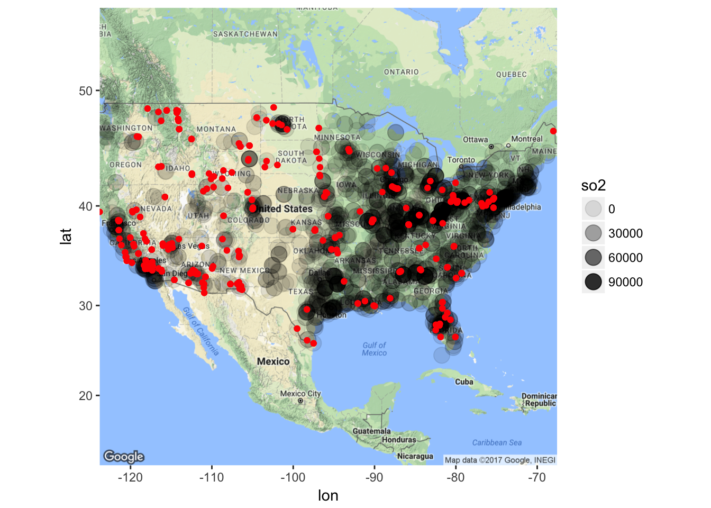
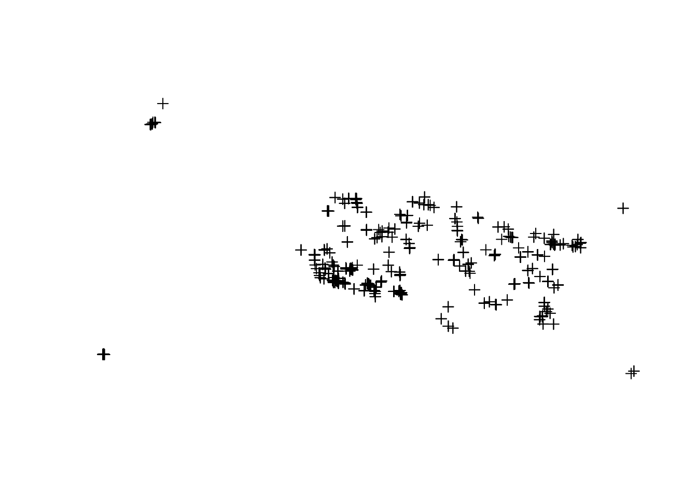
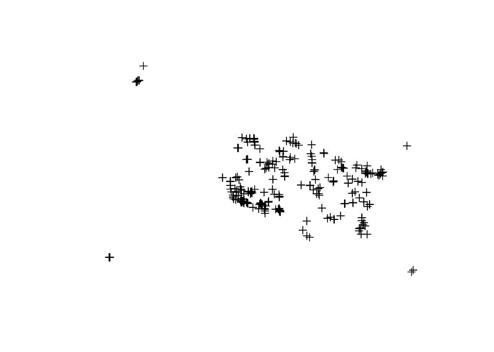
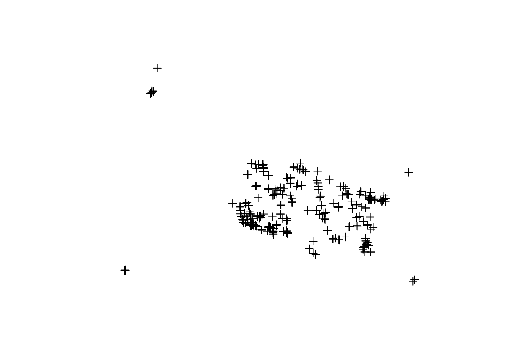
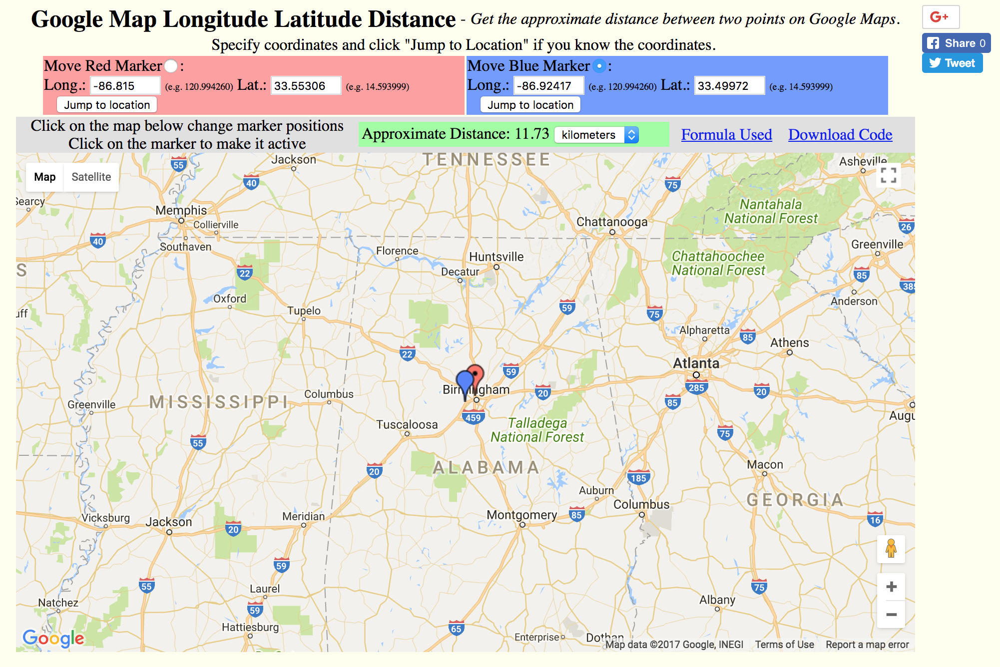
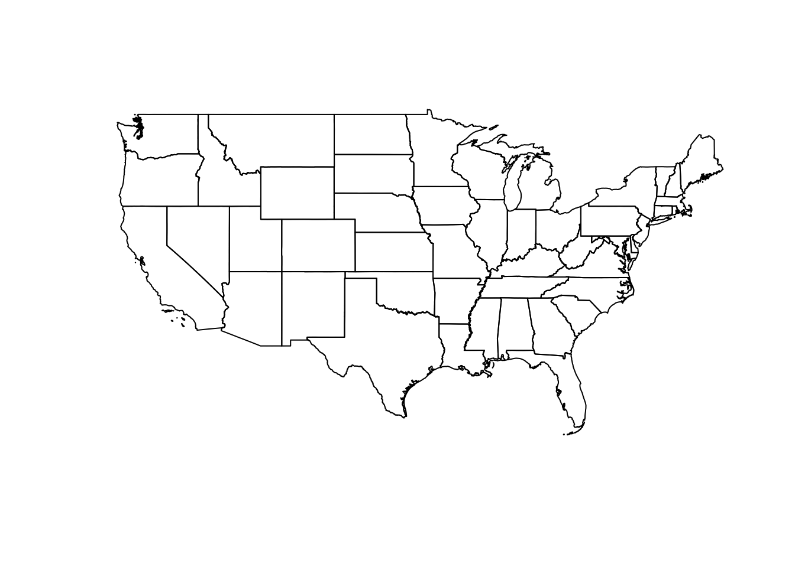
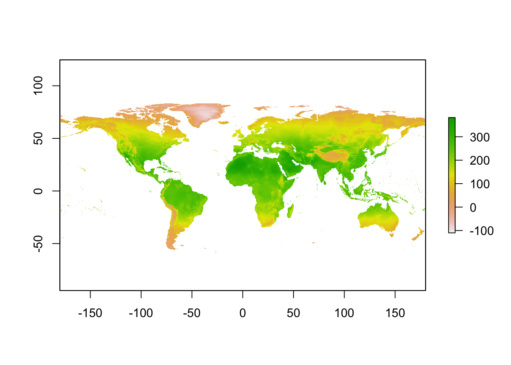

Chapter 7 Visualization
7.1 Maps and GIS
GIS: Geographic Information System
Readings:
Bivand, Pebesma, and Gómez-Rubio (2013)
http://www.spatialecology.com/beyer/assets/Beyer_Introduction_to_geospatial_analysis_in_R.pdf
7.1.1 Longitudes, latitudes and CRS
Reading: https://www.nceas.ucsb.edu/~frazier/RSpatialGuides/OverviewCoordinateReferenceSystems.pdf
CRS: Coordinate Reference System
EPSG Geodetic Parameter Dataset: structured dataset of Coordinate Reference Systems and Coordinate Transformations (http://www.epsg-registry.org/)
7.1.2 Vector data and shapefiles
7.1.3 Raster data
7.1.4 Backends
7.1.4.1 GDAL
GDAL: Geospatial Data Abstraction Library
7.1.4.2 GEOS
GEOS: Geometry Engine - Open Source
https://en.wikipedia.org/wiki/JTS_Topology_Suite#Applications_Using_GEOS
7.1.5 R as a GIS: packages
https://cran.r-project.org/web/packages/sp/
7.1.5.1 rgdal
rgdal: Bindings for the ‘Geospatial’ Data Abstraction Library
Provides bindings to the ‘Geospatial’ Data Abstraction Library (‘GDAL’) (>= 1.6.3) and access to projection/transformation operations from the ‘PROJ.4’ library. The ‘GDAL’ and ‘PROJ.4’ libraries are external to the package, and, when installing the package from source, must be correctly installed first. Both ‘GDAL’ raster and ‘OGR’ vector map data can be imported into R, and ‘GDAL’ raster data and ‘OGR’ vector data exported. Use is made of classes defined in the ‘sp’ package. Windows and Mac Intel OS X binaries (including ‘GDAL’, ‘PROJ.4’ and ‘Expat’) are provided on ‘CRAN’.
7.1.5.2 rgeos
rgeos: Interface to Geometry Engine - Open Source (‘GEOS’)
Interface to Geometry Engine - Open Source (‘GEOS’) using the C ‘API’ for topology operations on geometries. The ‘GEOS’ library is external to the package, and, when installing the package from source, must be correctly installed first. Windows and Mac Intel OS X binaries are provided on ‘CRAN’.
7.1.5.3 proj4
proj4: A simple interface to the PROJ.4 cartographic projections library
A simple interface to lat/long projection and datum transformation of the PROJ.4 cartographic projections library. It allows transformation of geographic coordinates from one projection and/or datum to another.
7.1.5.4 sf
sf: Simple Features for R
Support for simple features, a standardized way to encode spatial vector data. Binds to GDAL for reading and writing data, to GEOS for geometrical operations, and to Proj.4 for projection conversions and datum transformations.
7.1.5.5 sp
sp: Classes and Methods for Spatial Data
Classes and methods for spatial data; the classes document where the spatial location information resides, for 2D or 3D data. Utility functions are provided, e.g. for plotting data as maps, spatial selection, as well as methods for retrieving coordinates, for subsetting, print, summary, etc.
7.1.5.6 ggmap
ggmap: Spatial Visualization with ggplot2
A collection of functions to visualize spatial data and models on top of static maps from various online sources (e.g Google Maps and Stamen Maps). It includes tools common to those tasks, including functions for geolocation and routing.
7.1.5.7 leaflet
leaflet: Create Interactive Web Maps with the JavaScript ‘Leaflet’ Library
Create and customize interactive maps using the ‘Leaflet’ JavaScript library and the ‘htmlwidgets’ package. These maps can be used directly from the R console, from ‘RStudio’, in Shiny apps and R Markdown documents.
7.1.6 Example
US: https://www.youtube.com/watch?v=qu6TiwvjPLs
Europe: https://www.youtube.com/watch?v=TYqsa5EvFe4
Power plants and air pollution monitors
https://github.com/datasciencelabs/data/blob/master/powerplants.csv
https://github.com/datasciencelabs/data/blob/master/pm25.csv
power_plants <- read.csv("https://raw.githubusercontent.com/datasciencelabs/data/master/powerplants.csv")[, -1]
names(power_plants)[4] <- "so2"
pm25 <- read.csv("https://raw.githubusercontent.com/datasciencelabs/data/master/pm25.csv")[, -1]
names(pm25)[4] <- "pm"library(ggmap)## Loading required package: ggplot2map <- get_map("US", zoom = 4)## Map from URL : http://maps.googleapis.com/maps/api/staticmap?center=US&zoom=4&size=640x640&scale=2&maptype=terrain&language=en-EN&sensor=false## Information from URL : http://maps.googleapis.com/maps/api/geocode/json?address=US&sensor=falsep <- ggmap(map) +
geom_point(data = power_plants, aes(x = lon1, y = lat1, alpha = so2), size = 5) +
geom_point(data = pm25, aes(x = lon2, y = lat2), color = "red")
p## Warning: Removed 1 rows containing missing values (geom_point).## Warning: Removed 37 rows containing missing values (geom_point).
7.1.6.1 Spatial objects
power_plants and pm25 are data frames. ggmap “guessed” how they should be displayed.
class(power_plants)## [1] "data.frame"class(pm25)## [1] "data.frame"We can convert data frames into spatial objects. plot is still “guessing” the CRS.
library(sp)
spm25 <- pm25
coordinates(spm25) <- ~lon2 + lat2
class(spm25)## [1] "SpatialPointsDataFrame"
## attr(,"package")
## [1] "sp"plot(spm25)
library(proj4)
proj4string(spm25)## [1] NAproj4string(spm25) <- CRS("+init=epsg:4269") # for most federal agencies NAD83 (EPSG:4269)
proj4string(spm25)## [1] "+init=epsg:4269 +proj=longlat +datum=NAD83 +no_defs +ellps=GRS80 +towgs84=0,0,0"plot(spm25)
head(spm25)## coordinates id2 pm
## 1 (-86.815, 33.55306) 01073-0023 26.44084
## 2 (-86.92417, 33.49972) 01073-2003 21.65607
## 3 (-86.77944, 33.58556) 01073-6003 28.02234
## 4 (-86.79639, 33.56528) 01073-6004 29.56994
## 5 (-88.08753, 30.76994) 01097-0003 18.82726
## 6 (-149.8246, 61.20586) 02020-0018 14.00546head(spTransform(spm25, CRS("+init=epsg:3857")), 3) # Mercator: Google map## coordinates id2 pm
## 1 (-9664202, 3968945) 01073-0023 26.44084
## 2 (-9676354, 3961823) 01073-2003 21.65607
## 3 (-9660244, 3973287) 01073-6003 28.02234plot(spTransform(spm25, CRS("+init=epsg:3857")))
7.1.6.2 Spatial operations
spm25[1, ]## coordinates id2 pm
## 1 (-86.815, 33.55306) 01073-0023 26.44084spm25[2, ]## coordinates id2 pm
## 2 (-86.92417, 33.49972) 01073-2003 21.65607p1 <- spm25[1, ]
p2 <- spm25[2, ]
spDistsN1(p1, p2, longlat=TRUE) # longlat TRUE to get km## [1] 11.74021# m <- spDists(p1, spm25, longlat=TRUE) # to get all pairwise distancesLet’s check: http://www.tytai.com/gmap/distance/.

library(spdep)## Warning: package 'spdep' was built under R version 3.4.3## Loading required package: Matrix## Loading required package: spData## Warning: package 'spData' was built under R version 3.4.3##
## Attaching package: 'spData'## The following objects are masked _by_ '.GlobalEnv':
##
## x, ykn <- knn2nb(knearneigh(spm25, k = 5))## Warning in knearneigh(spm25, k = 5): knearneigh: identical points foundkn[1] # 3 4 304 306 308## [[1]]
## [1] 3 4 304 306 308pm25[unlist(kn[1]), ]## id2 lat2 lon2 pm
## 3 01073-6003 33.58556 -86.77944 28.02234
## 4 01073-6004 33.56528 -86.79639 29.56994
## 304 01073-0023 33.55306 -86.81500 21.98295
## 306 01073-6002 33.57833 -86.77389 12.35746
## 308 01073-6004 33.56528 -86.79639 28.511297.1.6.3 Polygons
In which states are the PM2.5 monitors?
library(tigris)
library(raster)
s <- states(cb = TRUE, year = 2010)
shapefile(s, "~/Dropbox/Data17/census/census.shp")library(raster)
s <- shapefile("~/Dropbox/Data17/census/census.shp")
sort(unique(s@data$NAME))## [1] "Alabama" "Alaska" "Arizona"
## [4] "Arkansas" "California" "Colorado"
## [7] "Connecticut" "Delaware" "District of Columbia"
## [10] "Florida" "Georgia" "Hawaii"
## [13] "Idaho" "Illinois" "Indiana"
## [16] "Iowa" "Kansas" "Kentucky"
## [19] "Louisiana" "Maine" "Maryland"
## [22] "Massachusetts" "Michigan" "Minnesota"
## [25] "Mississippi" "Missouri" "Montana"
## [28] "Nebraska" "Nevada" "New Hampshire"
## [31] "New Jersey" "New Mexico" "New York"
## [34] "North Carolina" "North Dakota" "Ohio"
## [37] "Oklahoma" "Oregon" "Pennsylvania"
## [40] "Puerto Rico" "Rhode Island" "South Carolina"
## [43] "South Dakota" "Tennessee" "Texas"
## [46] "Utah" "Vermont" "Virginia"
## [49] "Washington" "West Virginia" "Wisconsin"
## [52] "Wyoming"s <- subset(s, ! NAME %in% c("Alaska", "Hawaii", "Puerto Rico"))
plot(s)
proj4string(s)## [1] "+proj=longlat +datum=NAD83 +no_defs +ellps=GRS80 +towgs84=0,0,0"proj4string(spm25)## [1] "+init=epsg:4269 +proj=longlat +datum=NAD83 +no_defs +ellps=GRS80 +towgs84=0,0,0"spm25proj <- spTransform(spm25, proj4string(s))
proj4string(spm25proj)## [1] "+proj=longlat +datum=NAD83 +no_defs +ellps=GRS80 +towgs84=0,0,0"o <- over(spm25proj, s)
odf <- data.frame(spm25@data , o)
head(odf)## id2 pm GEO_ID STATE NAME LSAD CENSUSAREA
## 1 01073-0023 26.44084 0400000US01 01 Alabama <NA> 50645.33
## 2 01073-2003 21.65607 0400000US01 01 Alabama <NA> 50645.33
## 3 01073-6003 28.02234 0400000US01 01 Alabama <NA> 50645.33
## 4 01073-6004 29.56994 0400000US01 01 Alabama <NA> 50645.33
## 5 01097-0003 18.82726 0400000US01 01 Alabama <NA> 50645.33
## 6 02020-0018 14.00546 <NA> <NA> <NA> <NA> NA7.1.6.4 Rasters
Let’s get temperature data.
library(raster)
temperatures <- getData("worldclim", var = "tmean", res = 10)
tmp_aug <- temperatures[[8]] # select August
plot(tmp_aug)
tmp_aug_state <- extract(tmp_aug, s, fun = mean, na.rm = TRUE, df = TRUE)## Warning in .local(x, y, ...): Transforming SpatialPolygons to the CRS of
## the Rasterhead(cbind(s@data$NAME, 0.1 * tmp_aug_state)) # 0.1 to get back to C## s@data$NAME ID tmean8
## 1 Maine 0.1 17.50541
## 2 Massachusetts 0.2 20.11750
## 3 Michigan 0.3 18.97676
## 4 Montana 0.4 17.77345
## 5 Nevada 0.5 20.37820
## 6 New Jersey 0.6 22.40779# tmp_aug_pp <- extract(tmp_aug, spm25, fun = mean, na.rm = TRUE, df = TRUE)7.1.7 From sp to sf
7.2 Principles of visualization
Guest lecture (James Honaker)
References
Bivand, Roger, Edzer J. Pebesma, and Virgilio Gómez-Rubio. 2013. Applied Spatial Data Analysis with R - Second Edition. Vol. 10. Use R! Springer.